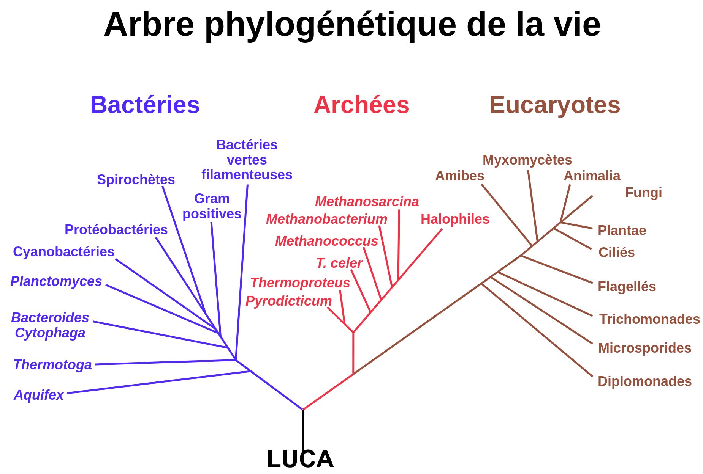

Conclusion
L’apparition de la vie sur Terre est le résultat d’un long processus qui se conclura par la création des espèces vivantes et de leurs caractères génétiques.
Les conditions pour que la vie apparaissent sont strictes et donc les probabilités sont infimes, de plus, les conditions sont toutes sensibles l'une à l'autre (Une condition peut en faire intervenir ou changer d'autre).
La base de la vie est quelque chose de très complexe, les évènements qui la déclenchent sont soit hypothétiques soit avec des chances infimes. Mais on peut être sûr que toute forme vivante découle d'un ADN et donc d'un possible être commun à tous : LUCA ( Last Universal Common Ancestor/Dernier ancêtre commun universel)

Les différentes étapes et les origines propres de la vie conservent donc un caractère hypothétique. On ne peut donc savoir laquelle des hypothèses présentées par les scientifiques est avérée. Un jour peut-être, nous le découvrirons et l’espoir d'une telle découverte pousse encore bon nombre de scientifiques à se pencher sur la question.
Par exemple courant 2015-2016 ce sujet est très travaillé, et la NASA a déjà répertorié plusieurs cas d'exoplanètes potentiellement habitables
en effet elles respectent pratiquement toutes les conditions et si elles sont habitables alors elles abritent peut être déjà la vie ...